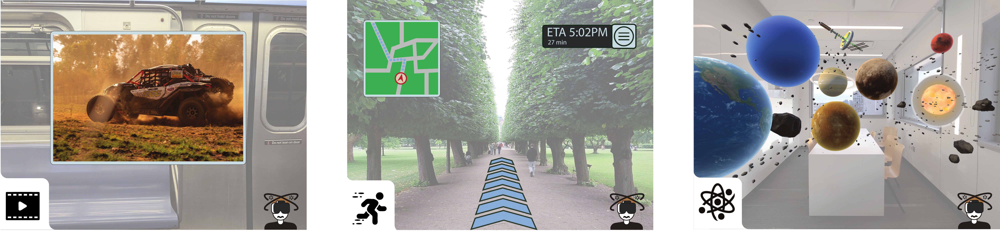

Attention Drives Cybersickness in Augmented Reality
1New York University 2Barnard College, Columbia University 3SRI International
Transactions on Visualization & Computer Graphics 2026 (Proc. IEEE ISMAR 2026)

AR applications such as watching movies (left), viewing static UIs while walking (middle), or exploring educational simulations (right) often display motion that diverges from the physical world, creating visual-vestibular conflict that can induce cybersickness. Our experiments show that AR can cause significant cybersickness, driven primarily by user attention, with direct implications for AR interface design.
Abstract
Cybersickness, a phenomenon of negative symptoms arising from visual motion, remains an obstacle to prolonged use of immersive displays. While cybersickness in virtual reality (VR) has been extensively studied, its mechanisms and mitigation remain underexplored in optical see-through augmented reality (AR). Unlike VR, AR preserves a direct view of the physical world while overlaying virtual content. This stable visual context fundamentally alters the visual-vestibular conflicts that contribute to cybersickness. In this paper, we investigate the causes of cybersickness in optical see-through AR and examine whether mitigation techniques developed for VR transfer to this setting. Specifically, we analyze how attention to virtual and physical content influences cybersickness under visual-vestibular conflict and whether reducing the virtual field of view (FOV) lowers sickness when users do attend to the virtual layer. Our results show that optical see-through AR can induce severe cybersickness when users attend to dynamic virtual content despite the presence of a grounding physical environment. In contrast, sickness levels are attenuated when attention is allocated towards the physical environment. We further find that reducing the global motion cues by a reduced FOV does not reliably mitigate AR cybersickness, suggesting that established cybersickness mitigation strategies from VR may not directly transfer to AR. Together, these findings demonstrate that AR cybersickness is an attention-dependent phenomenon with significant implications for AR interface design.
Paper and Supplementary Materials
@article{kam2026attention,
title={Attention Drives Cybersickness in Augmented Reality},
author={Kam, Henry and Williams, Niall L and Lubin, Jeffrey and Bergen, James R and Sizintsev, Mikhail and Sun, Qi and Groth, Colin},
journal={IEEE Transactions on Visualization and Computer Graphics},
year={2026},
publisher={IEEE}
}